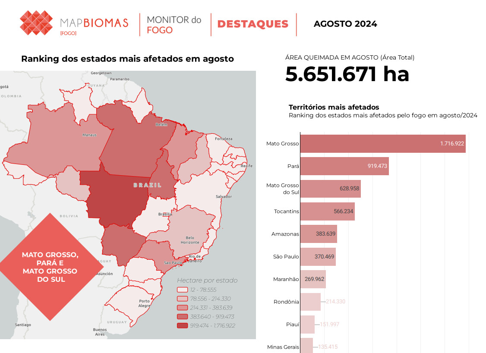

QUEIMADAS

Queimadas no Brasil
Em agosto, o Brasil registrou 68.635 focos de queimadas, conforme dados do “Programa Queimadas” do Instituto Nacional de Pesquisas Espaciais (Inpe). Este é o pior resultado para o mês desde 2010, quando foram detectados 90.444 focos ativos pelo satélite de referência do Inpe.
Desde 1998, os dados históricos do Inpe indicam que este foi o quinto pior mês de agosto em termos de focos de queimadas no Brasil. A taxa mais que dobrou em comparação com o ano passado, quando foram registrados 28.056 focos no mesmo período.
A média de queimadas para o mês é de 46.529 focos. O menor número de focos registrado pelo Inpe ocorreu em 2013, com cerca de 21 mil focos contabilizados em todo o país.
Ainda segundo dados do Inpe, 18.620 focos foram registrados no Cerrado desde 1º de agosto até o último sábado (31). A taxa representa mais que o dobro de focos quando comparada com o mês de agosto de 2023, quando 6.850 focos foram contabilizados.
O bioma também vem registrando altas taxas de desmatamento desde o ano passado, e desde o começo do ano já contabiliza 40.496 focos no total, um aumento de 70% quando comparado com o mesmo período de 2023 (no intervalo de 1º de janeiro até 31 agosto).